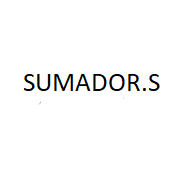
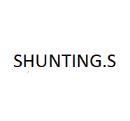
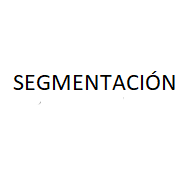

PedroGonz5
NOOK MIPS

Sumador.s
Programa MIPS para suamr número en hexadecimal y que muestre el resultado en binario complemento a dos.

Shunting.s
Algoritmo shunting yard implementado en MIPS mediante el uso de notación polaca inversa que devuelve resultados en decimal o hexadecimal como su entrada.

Segmentacion.pdf
Apuntes sobre la segmentaciónd de los procesadores vistos en la asignatura de Arquitectura y Organización de Computadoras